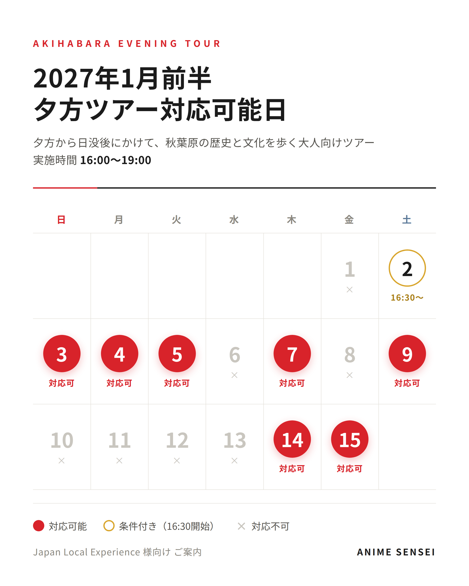
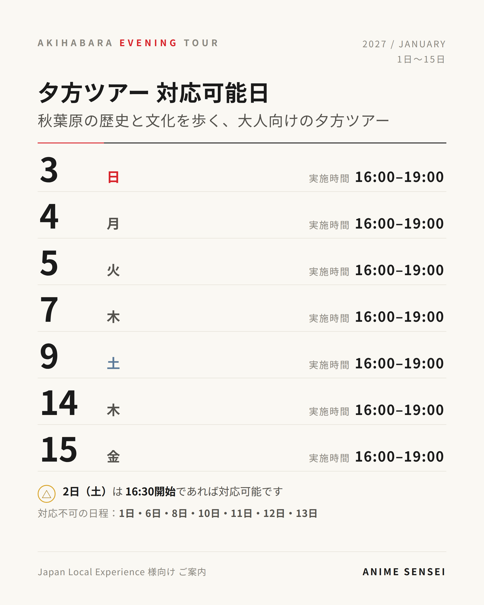
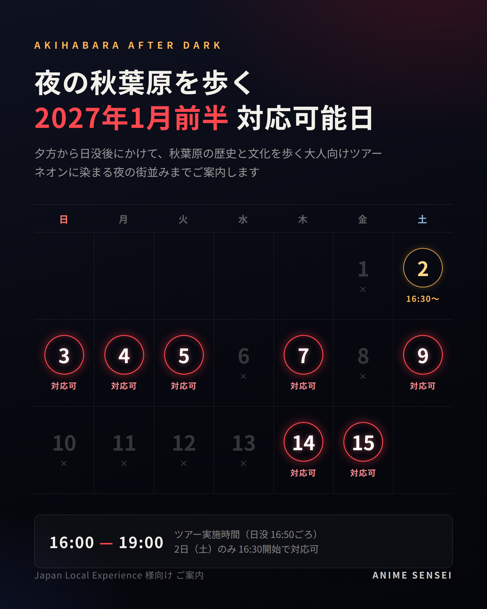
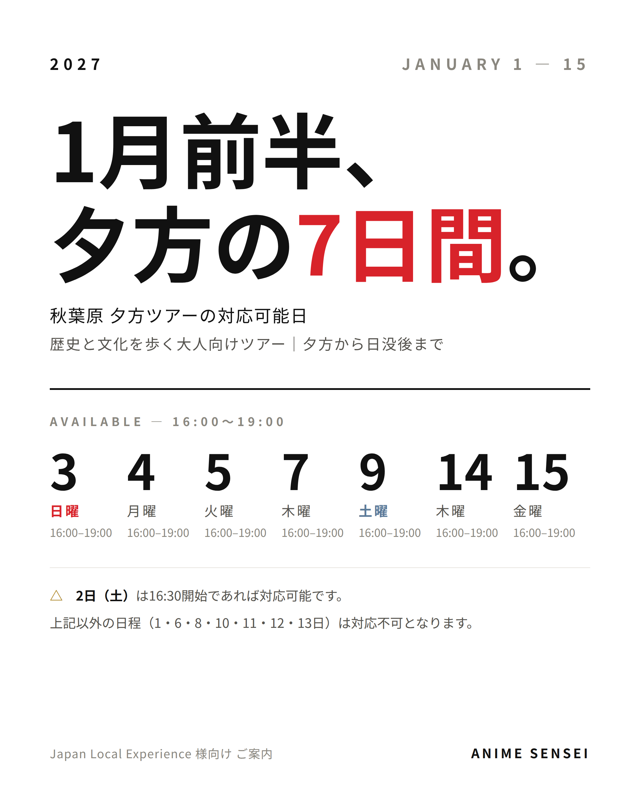
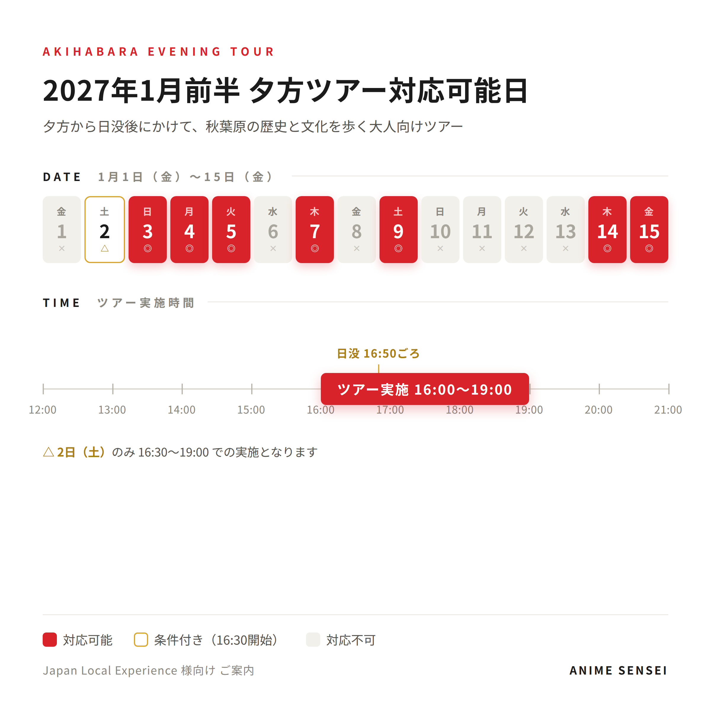

LINEでそのまま送れる画像です。各案とも内容は同一（対応可：3・4・5・7・9・14・15日／条件付き：2日／不可：1・6・8・10・11・12・13日、時間は16:00〜19:00）。
月グリッドに赤丸で対応可を明示する定番形。全体の空き具合が一目で分かり、ビジネス用途で最も無難。

1080 × 1350（表示は2倍解像度 2160 × 2700）
対応可能日だけを大きな数字で縦に並べた編集デザイン。選べる日が主役で、温かみのある紙面調。

1080 × 1350（表示は2倍解像度 2160 × 2700）
ダーク背景にネオンのグローで「夜の秋葉原」の世界観を出した一枚。ツアーの内容そのものを雰囲気で伝える。

1080 × 1350（表示は2倍解像度 2160 × 2700）
「1月前半、夕方の7日間。」を主役にしたミニマルなポスター型。文字だけで構成した一番引き算の効いた案。

1080 × 1350（表示は2倍解像度 2160 × 2700）
15日間を一列に並べ、実施時間と日没（16:50ごろ）の位置まで図示した情報設計型。夕方ツアーらしさが伝わる。

1200 × 1200（表示は2倍解像度 2400 × 2400）